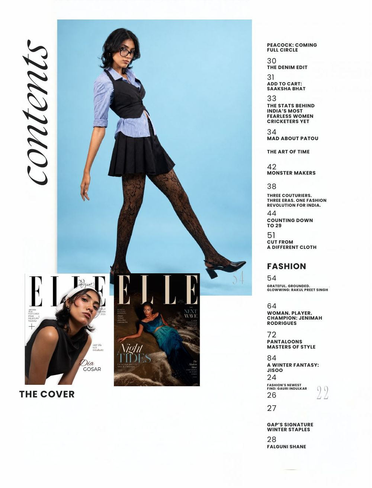
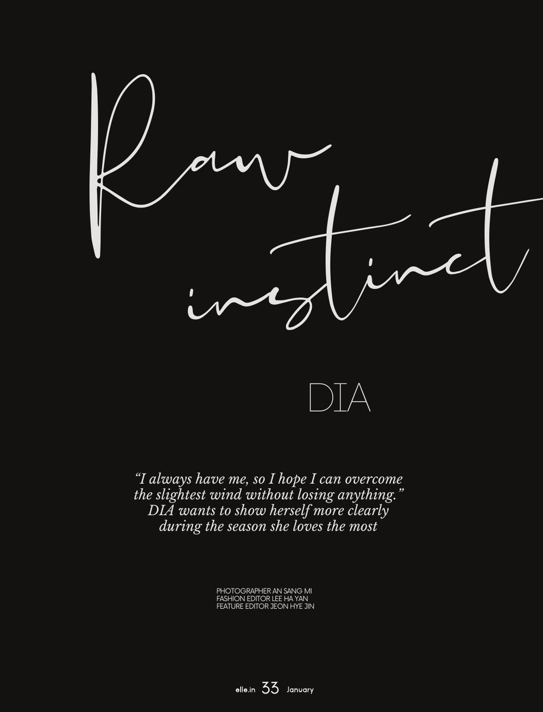
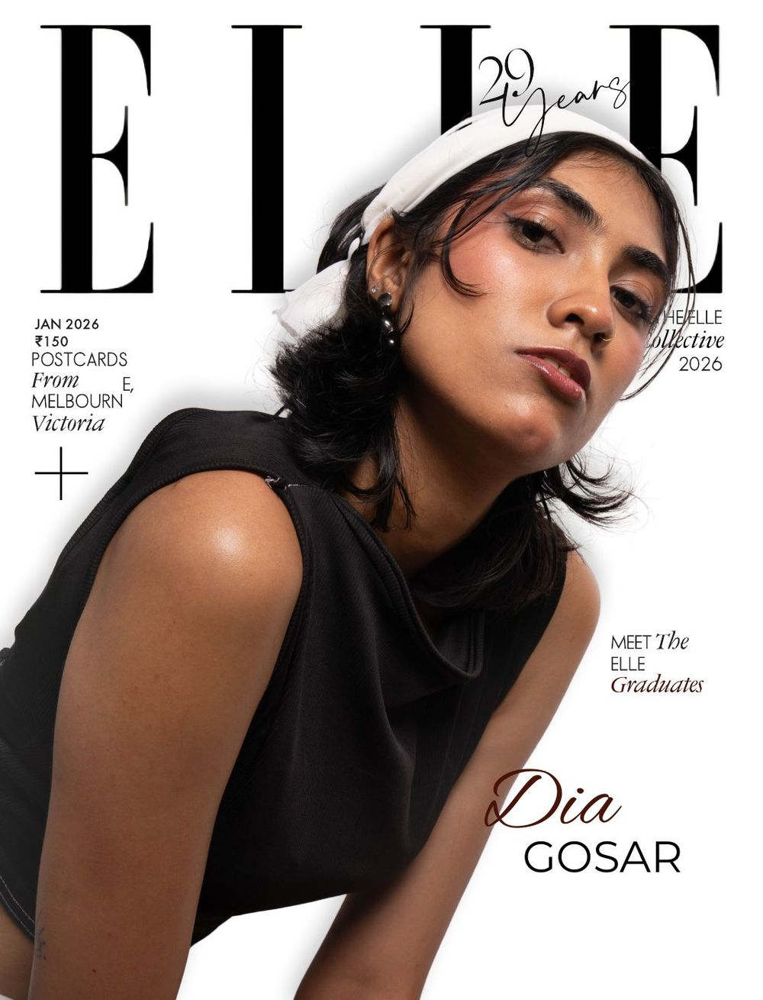
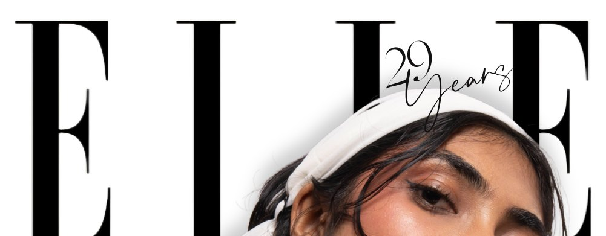
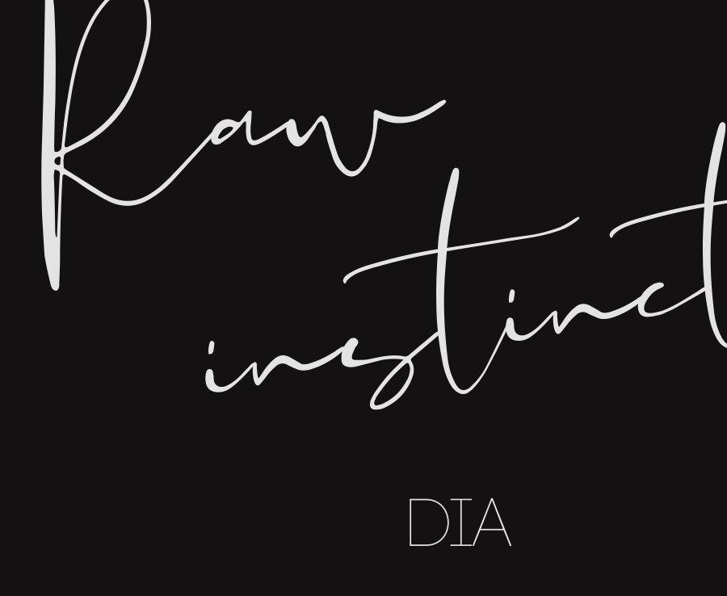

A concept anniversary issue where every story gets its own colour and typeface under one masthead.
Academic concept issue. Not affiliated with ELLE or the brands shown.



Black and white holds the issue together. Each feature takes its palette from its own photographs. Tap to copy.

High-contrast and condensed, with the anniversary script laid across it on the cover.
Healthier, Every Day
Bare Vanilla
GRACE.

Editorial design by Aleesha K. L.